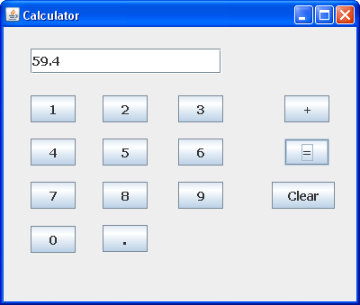
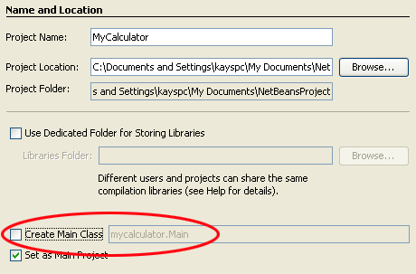
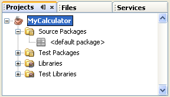
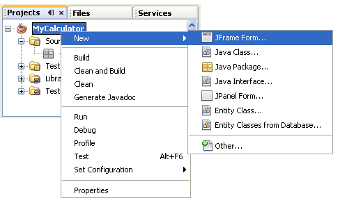
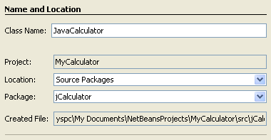

Creating a Java Form with the NetBeans IDE
Java Calculator Project: 1 2 3 4 5 6 7 8 9 10
You don't have to output everything to a terminal window in Java. In this section, you'll be writing a calculator programme that makes use of forms. The form will have buttons and a text box. We'll start off with a very simple calculator that can only add up, and then extend its capabilities so that it can subtract, divide and multiply. The calculator will look something like this:

(The above screenshot was taken on a Windows XP machine. Your calculator will look different if you have, say, a Linux operating system, or an Apple Mac.)
Let's make a start.
NetBeans and Java Forms
Developing a Graphic User Interface (GUI) using Java can be an art-form in itself, as there's quite a lot to get used to: Components, Containers, Layout Managers, and a whole lot more besides. The NetBeans development environment, however, has greatly simplified the creation of forms, and we'll use this to drag and drop controls onto a frame.
Rather than go through reams of GUI theory, we'll just jump straight into it.
Create a new project for this by clicking File > New Project from the NetBeans menu at the top. Select Java > Java Application from the list boxes, and then click the Next button.
On step 2 of the wizard, type MyCalculator as the project name. At the bottom, uncheck "Create main class". This is because a main method will be created for us by NetBeans when we add a form. Step 2 of the wizard should look like this:

Click the Finish button, and NetBeans will create the project, but not much else. Have a look at the Projects area on the left in NetBeans and you should see this (If you can't see the Projects area, click Window > Projects from the NetBeans menu at the top):

Normally, there's a .java file under the Source Packages name. But because we unchecked the "Create main class" box, there's no java class file there.
What we'll do is to add a Form to the project. When the form is created, it will be created in its own java class file.
To add a form, right click the project name in the Projects window. A menu will appear:

Select New > JFrame Form from the menu. When you do, you should see the following wizard appear:

Here, you are being asked for a name for your Class, and a package name. We've already created the project, and called it MyCalculator. The package name and class will go into the project. So, for your Class Name type JavaCalculator. In the blank package text box, type jCalculator. So we're creating a class called JavaCalculator, which is in the jCalculator package, which is in the MyCalculator project.
Click the Finish button to complete the process.
In the next part, you'll see what happens after you click finish, and explore the various windows of the NetBeans IDE.